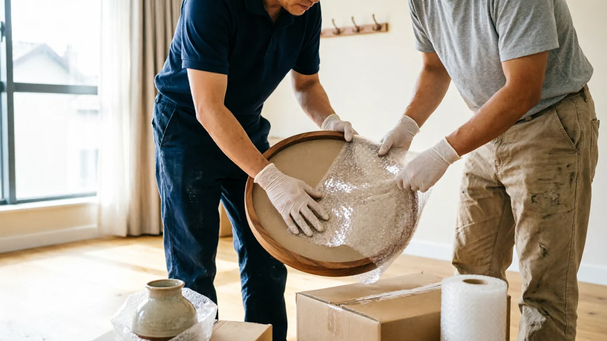
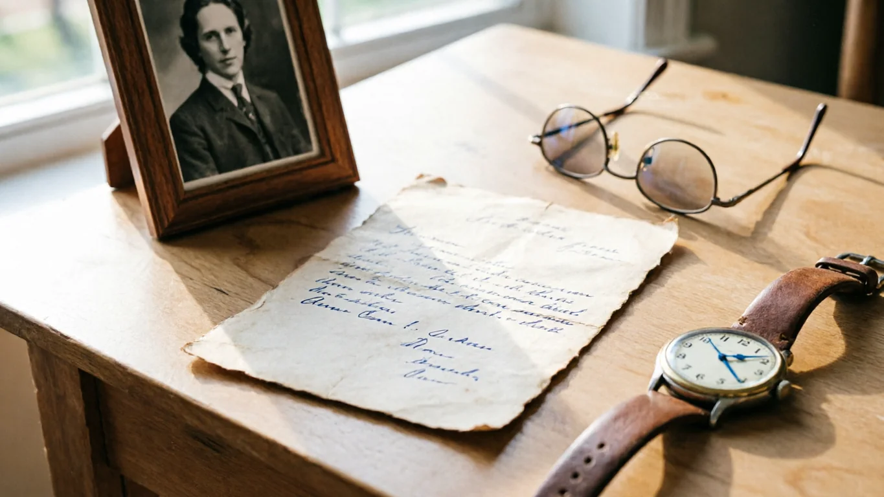

No hi ha un bon moment per pensar en el pis. I tanmateix, la vida imposa terminis: el contracte de lloguer, els tràmits de l'herència, la necessitat de tancar un cicle. Ningú està preparat per a això. Aquesta guia no pretén fer allò impossible fàcil. Pretén que, almenys, sigui més clar per on començar.
El buidatge d'un habitatge després d'una defunció és una de les tasques amb més càrrega emocional que pot afrontar una família. No és logística pura: és enfrontar-se a la història d'una persona, a les seves pertinences quotidianes, a tot allò que queda quan algú ja no hi és.
Al mateix temps, és una tasca que té terminis, aspectes legals, decisions pràctiques i, en molts casos, desacords familiars que cal gestionar. Aquesta guia aborda tot això: des dels primers tràmits fins a l'últim moble, amb informació real i actualitzada per a Barcelona i Catalunya el 2026.
Què implica buidar un pis després d'una defunció
A diferència d'un buidatge per mudança o canvi d'inquilins, el buidatge per defunció té característiques pròpies que el fan més complex en tots els sentits:
La dimensió emocional
Cada calaix conté una història. Cada moble té un nom. Hi ha fotos que desperten records, objectes quotidians que de sobte adquireixen un altre pes, i decisions que de vegades cal prendre amb el dol encara molt recent. No és estrany que la simple presència al pis sigui difícil, i que les decisions que semblen objectives (això es llença, això no) estiguin carregades d'un significat que va molt més enllà de l'objecte en si.
Això no és un problema que calgui resoldre: és part del procés. L'important és reconèixer-ho i organitzar-se perquè la càrrega emocional no bloquegi completament la part logística que també cal gestionar.
La dimensió legal i hereditària
Els béns del difunt formen part de l'herència. Abans de moure, llençar o distribuir objectes, és important tenir clar qui té dret legal a fer-ho. Actuar de forma unilateral sense acord entre els hereus pot tenir conseqüències legals. La formalització de l'herència a Catalunya es regeix pel Codi Civil Català i el procés notarial habitual.
La dimensió pràctica
Un pis habitat durant dècades acumula un volum d'objectes que pot ser aclaparador. Cal revisar sistemàticament cada habitació, cada armari, cada calaix. Hi ha documents que poden estar barrejats amb papers sense importància. Hi ha objectes de valor econòmic o sentimental que necessiten un tracte especial. I hi ha terminis que no sempre esperen.
Una perspectiva que ajuda
Buidar el pis d'algú no és esborrar la seva presència. És completar un cicle. Moltes famílies troben en aquest procés una forma d'estar juntes, de recordar, de tancar amb dignitat un capítol. No cal tenir pressa. Però tampoc cal deixar que la por al procés ho paralitzi tot.
Tràmits legals previs al buidatge
Abans de començar a buidar el pis, convé tenir clar en quin punt està el procés legal. Aquests són els tràmits més rellevants i els recursos oficials on gestionar-los:
Certificat de Defunció
És el primer document necessari per a tots els tràmits posteriors. S'obté al Registre Civil del municipi on va ocórrer la defunció o a través de la funerària.
mjusticia.gob.es →Registre d'Últimes Voluntats
Permet comprovar si el difunt va deixar testament i davant de quin notari. Primer tràmit recomanat. Se sol·licita amb el certificat de defunció i una taxa d'uns 3,78€.
mjusticia.gob.es/registro-ultimas-voluntades →Declaració d'Hereus
Si no hi ha testament, cal tramitar la declaració d'hereus davant notari. Determina qui té dret legal als béns del difunt. A Catalunya aplica el Codi Civil Català.
gencat.cat →Impost de Successions (Catalunya)
Els béns heretats a Catalunya estan subjectes a l'Impost de Successions i Donacions. Termini: 6 mesos des de la defunció (prorrogable). Tramitació a través de l'Agència Tributària de Catalunya.
atc.gencat.cat →LAU – Contracte de Lloguer
Si el pis era de lloguer, els hereus han de comunicar la defunció al propietari i poden subrogar-se o rescindir. Termini màxim habitual: 1–3 mesos. Llei d'Arrendaments Urbans.
boe.es/LAU →Gestió Legal de Residus
L'empresa que buidi el pis ha d'estar autoritzada com a transportista de residus. Consulteu el registre de gestors autoritzats a Catalunya.
residus.gencat.cat →1. Obtenir certificat de defunció → 2. Consultar Registre d'Últimes Voluntats → 3. Obrir el testament davant notari (o tramitar declaració d'hereus si no hi ha testament) → 4. Acordar entre hereus la gestió del buidatge → 5. Tramitar l'Impost de Successions (termini 6 mesos). El buidatge es pot iniciar en paral·lel als tràmits successoris, sempre que hi hagi acord entre els hereus.
Guia pràctica pas a pas per a les famílies
L'error més gran en aquests processos és començar sense pla. Aquí teniu l'ordre que funciona:
-
Reunió familiar prèvia: acordar abans d'actuar
Abans de tocar res, els hereus han d'acordar els criteris bàsics: qui pren les decisions en cas de desacord, quins criteris s'usen per classificar els objectes (conservar, repartir, donar, gestionar) i qui és el responsable de coordinació pràctica. Aquest acord previ evita la majoria dels conflictes posteriors. Si hi ha tensió, fer-la fora del pis, en un entorn neutre, ajuda a mantenir la calma.
Si els hereus no poden ser-hi presents, l'inventari fotogràfic d'una empresa és la solució -
Revisar el pis complet abans de moure res
Abans de començar el buidatge, fer una revisió sistemàtica de cada habitació, armari, calaix i caixa. L'objectiu és doble: trobar documents importants i entendre el volum i tipus de contingut abans de decidir com gestionar-lo. No llençar res en aquesta fase.
-
Localitzar i apartar documents importants
És el pas més crític i el que amb més freqüència es fa malament. Els documents poden estar a qualsevol lloc: en arxivadors ordenats, però també en calaixos de cuina, a les butxaques d'abric, entre les pàgines de llibres, en capses de sabates a dalt de l'armari.
Documents que cal buscar:
- Escriptures de propietat de l'immoble o altres béns
- Testament (si no està dipositat a notaria)
- Llibretes bancàries, contractes de compte i targetes
- Assegurances de vida i pòlisses vigents
- Documents d'identitat (DNI, passaport)
- Títols acadèmics o professionals
- Documents de pensió i Seguretat Social
- Contractes de subministraments (gas, llum, aigua, internet)
- Deutes o préstecs vigents
- Documents de vehicles (si n'hi ha)
-
Documentació fotogràfica abans del buidatge
Fotografiar totes les habitacions abans de moure res és una pràctica que evita molts conflictes posteriors. Serveix per a l'inventari de l'herència, per resoldre dubtes sobre "què hi havia" i perquè tots els hereus tinguin la mateixa informació sobre el contingut del pis, encara que no hagin pogut ser-hi presents.
-
Classificar amb el sistema de quatre categories
Aplicar un criteri clar abans de començar a moure objectes redueix el temps i els conflictes:
- Verd — Conservar: objectes insubstituïbles amb valor sentimental o legal (fotos, cartes, joies familiars, documents)
- Blau — Repartir: mobles, vaixelles, llibres, objectes que algun familiar vol endur-se
- Taronja — Donar o vendre: objectes en bon estat que ningú de la família necessita
- Gris — Gestionar: tot allò que no té ús ni valor recuperable
-
Treballar per zones, de menor a major càrrega emocional
El traster, el garatge i la cuina són bones zones d'inici. Són més "funcionals" i generen menys debat. Deixar el dormitori i la sala per al final, quan ja hi ha un ritme de treball establert i les decisions són més fàcils de prendre.
Sessions de 3–4 hores màxim. L'esgotament emocional acumula i prendre decisions cansat és contraproduent -
Gestionar cada categoria segons la seva destinació
Un cop classificat tot: els objectes per donar a través de Càritas, Creu Roja o Humana; els mobles amb valor mitjançant Wallapop o rastres locals; els documents al notari; la resta a través del servei municipal de voluminosos o els punts verds. Per a grans volums, empresa especialitzada.
-
Neteja final i preparació del pis
Un cop buidat, el pis necessita neteja completa per lliurar-lo a l'arrendador, llogar-lo o vendre'l. Si el pis fa temps que no s'habita pot requerir neteja profunda, tractament de fongs o humitat, i pintura. Consulteu la nostra guia sobre com preparar un pis per a la venda.
Checklist ràpid per no oblidar res
Què fer amb cada tipus d'objecte
Fotografies i àlbums
Són els objectes més insubstituïbles. Abans de qualsevol decisió, digitalitzar els àlbums: un escàner de fotos o fins i tot una fotografia de qualitat amb el mòbil serveix. Distribuir còpies digitals entre tots els familiars.
- Digitalitzar abans de repartir o descartar
- Google Fotos o un disc dur compartit permeten que tothom hi tingui accés
- Les fotos originals es reparteixen entre els hereus que les vulguin
- Les fotos soltes sense àlbum també mereixen revisió
Documents i papers
No llençar cap paper sense haver-lo revisat. Els documents importants poden estar barrejats amb factures de fa 20 anys. La regla és: en cas de dubte, guardar. Ja hi haurà temps de depurar.
- Documents legals: al notari o als hereus
- Factures i contractes vigents: verificar si cal cancel·lar-los
- Cartes i dietaris: decisió familiar pausada
- Papers sense valor aparent: revisar igualment abans de llençar
Joies i objectes de valor
Formen part de l'herència. Apartar, fotografiar i inventariar abans de qualsevol distribució. Si hi ha peces de valor significatiu, la valoració d'un joier o pèrit és recomanable abans de la distribució entre hereus.
- Inventari fotogràfic i per escrit de cada peça
- Consultar amb joier o pèrit si hi ha dubtes sobre el valor
- Distribució acordada entre tots els hereus
- Diners en efectiu: declarar a l'herència
Mobles
Els mobles en bon estat tenen més sortida del que sembla. Els de fusta massissa, amb caràcter o antics tenen demanda real. Abans de gestionar, valorar si algun es pot vendre o donar.
- Wallapop o Milanuncios per a mobles amb valor
- Rastres i botigues de segona mà a Barcelona
- Càritas Barcelona: mobles en bon estat per a famílies en dificultat
- Recollida municipal de voluminosos per a la resta (tel. 010)
Roba i tèxtil
La roba mai no hauria d'anar directament a un contenidor general. Barcelona té més de 900 contenidors taronges de roba, a més d'opcions de donació a entitats socials.
- Contenidors taronges Humana: a tota la ciutat
- Creu Roja Catalunya: campanyes de recollida periòdiques
- Càritas per a roba en bon estat
- Roba de qualitat: Vinted o botigues de segona mà
Electrodomèstics
Els que funcionen tenen mercat real. Els que no funcionen s'han de gestionar de forma específica segons el seu tipus, especialment frigorífics i rentadores pels seus components regulats.
- Funcionant: Wallapop o venda directa
- En comprar-ne un de nou: la botiga està obligada a retirar el vell gratis (RD RAEE)
- Punts Verds de Zona: barcelona.cat/punts-verds
- Frigorífics: només al Punt Verd de Zona (contenen gasos regulats)
Llibres i col·leccions
Col·leccions de llibres, revistes, monedes, segells o qualsevol altre objecte poden tenir valor de mercat real. Val la pena valorar-los abans de prendre decisions.
- Llibreries de segona mà a Barcelona: poden comprar col·leccions
- Catawiki per a objectes de col·leccionisme i peces especials
- Biblioteques municipals: accepten donacions seleccionades
- Punts verds per a llibres no recuperables
Medicaments i residus especials
Medicaments caducats, pintures, dissolvents, olis, bateries i productes de neteja concentrats no poden anar al contenidor ordinari. Tenen gestió específica obligatòria.
- Medicaments: SIGRE — contenidors a farmàcies
- Pintures, dissolvents, olis: Punt Verd de Zona
- Piles i bateries: contenidors especials en comerços
- Electrònica petita: Punts Verds de Barri
Errors freqüents i com evitar-los
-
Llençar papers sense revisar
És l'error més freqüent i més difícil de reparar. Entre papers aparentment sense valor poden haver-hi assegurances de vida vigents, contractes bancaris, deutes o documents legals essencials per a l'herència. El principi és clar: en cas de dubte, guardar. Ja hi haurà temps de depurar.
✓ Solució: revisar absolutament tot abans de llençar. Una capsa de "revisar després" és millor que una bossa d'escombraries sense criteri. -
Actuar sense acord entre hereus
Un hereu que pren decisions unilaterals sobre els objectes del difunt pot generar conflictes legals i emocionals greus. Fins i tot amb bona intenció, actuar pel seu compte pot danyar irreparablement la relació familiar.
✓ Solució: reunió familiar prèvia amb criteris acordats. Si hi ha conflicte real, un inventari fotogràfic complet per empresa neutral és la garantia per a tothom. -
Precipitar-se quan no hi ha terminis reals
La pressió de "cal buidar el pis" de vegades porta a prendre decisions apressades sobre objectes amb càrrega sentimental. Les decisions preses amb el dol molt recent i sota pressió solen generar penediment.
✓ Solució: identificar els terminis reals (lloguer, escriptures, etc.) i no crear urgències artificials. Per als objectes amb càrrega emocional alta, donar-se temps és vàlid. -
Llençar objectes de valor sense valorar-los
Mobles de fusta massissa, col·leccions de llibres, vaixelles completes, monedes antigues, aparells d'època. El que sembla brossa pot tenir valor real de mercat. Llençar sense valorar és perdre diners i, en herències, pot generar reclamacions entre hereus.
✓ Solució: abans de gestionar qualsevol objecte dubtós, publicar a Wallapop o consultar amb una botiga de segona mà. Costa poc temps i pot evitar llençar alguna cosa amb valor. -
Contractar algú sense autorització de gestor de residus
Hi ha persones que cobren per buidar pisos i llencen els residus en descampats o de forma il·legal. El propietari original (o els hereus) pot ser considerat responsable subsidiari d'aquesta gestió il·legal.
✓ Solució: exigir sempre número de registre com a transportista de residus a l'ARC i certificat de lliurament a gestor autoritzat. -
No documentar l'estat del pis abans del buidatge
Si el pis és de lloguer, l'arrendador pot reclamar desperfectes. Si és una herència amb diversos hereus, les discussions sobre "què hi havia" són freqüents. Sense documentació fotogràfica prèvia, no hi ha manera de resoldre aquestes disputes.
✓ Solució: fotografiar totes les habitacions abans de moure res. És un pas de 20 minuts que pot evitar conflictes importants.
Opcions oficials i legals a Barcelona per gestionar els objectes
Servei de Recollida Municipal de Voluminosos
L'Ajuntament de Barcelona ofereix recollida gratuïta de mobles i electrodomèstics a domicili per a particulars. Cal sol·licitar cita prèvia.
- Com sol·licitar: trucant al 010 (des de Barcelona) o a barcelona.cat/voluminosos
- Límit: màxim 3 objectes per sol·licitud, 12 per any i habitatge
- Termini: 2–5 dies hàbils des de la sol·licitud
- No inclou: runa, residus perillosos, empreses
- Horari de treta: el dia indicat a partir de les 20:00h del dia anterior
Punts Verds de Barcelona
Barcelona disposa de tres tipus de punts verds (deixalleries). Per a buidatges per defunció, els més útils són els de Zona, que accepten pràcticament de tot:
| Tipus | Mobles | Electrodomèstics | Runa | Roba | Residus perillosos |
|---|---|---|---|---|---|
| Punt Verd de Zona | ✅ Sí | ✅ Sí | ⚠️ Petites quantitats | ✅ Sí | ✅ Sí |
| Punt Verd de Barri | ❌ No | ⚠️ Només petits | ❌ No | ✅ Sí | ✅ Sí |
| Punt Verd Mòbil | ❌ No | ⚠️ Només petits | ❌ No | ⚠️ Alguns | ⚠️ Alguns |
Consulteu ubicacions i horaris actualitzats a barcelona.cat/punts-verds. El servei és gratuït per a particulars. Les empreses han de gestionar com a residus industrials.
Donació a entitats socials a Barcelona
- Càritas Barcelona: mobles en bon estat i roba. Consultar disponibilitat de recollida a la seva web.
- Creu Roja Catalunya: roba, parament, electrònica en bon estat. Campanya de recollida periòdica.
- Humana: més de 900 contenidors de roba taronja a Barcelona. També mobles en alguns centres.
- Banc d'Aliments: parament de cuina, utensilis, electrodomèstics petits.

Quan convé contractar una empresa de buidatge
Gestionar el buidatge pel seu compte és perfectament viable per a moltes famílies. Però hi ha situacions en què delegar la logística en professionals és clarament la millor decisió:
Terminis urgents o ajustats
Contracte de lloguer, data d'escriptures o lliurament del pis en pocs dies. Una empresa pot completar el buidatge en 1–2 dies.
La família viu fora de Barcelona
El cost de desplaçaments repetits sol superar el cost del servei. I el temps té valor.
El pis té molts anys de contingut
Dècades d'objectes acumulats que no es poden gestionar en visites de cap de setmana sense que es converteixi en un procés interminable.
Hi ha conflicte entre hereus
Un tercer professional que gestiona amb inventari documentat i neutral pot desbloquejar situacions que la família sola no pot resoldre.
La càrrega emocional és molt alta
Quan simplement no es pot. Delegar la part logística permet a la família centrar-se en el dol i en els objectes que realment importen.
Es necessita certificat legal de gestió
Per a tràmits notarials o de compravenda, acreditar la gestió legal de residus requereix un certificat que només pot emetre una empresa autoritzada.
Preus orientatius per a buidatges per defunció a Barcelona (2026)
| Tipus de pis | Superfície | Contingut estimat | Preu orientatiu |
|---|---|---|---|
| Estudi o pis petit | 30–50 m² | Moderat | 650€ – 1.200€ |
| Pis estàndard (2–3 hab.) | 60–80 m² | Mitjà-alt | 1.150€ – 2.200€ |
| Pis gran | 80–120 m² | Alt | 1.800€ – 3.200€ |
| Pis + traster o garatge | Variable | Alt o molt alt | 2.200€ – 4.500€ |
| Buidatge + neteja profunda | 60–80 m² | Mitjà-alt | 1.600€ – 3.500€ |
Desconfieu d'ofertes de buidatge a preus molt baixos sense visita prèvia. El buidatge legal implica gestió de residus, transport autoritzat i certificació. Una empresa que no inclou aquests costos probablement està llençant els residus de forma il·legal, cosa que pot repercutir en els hereus com a propietaris del contingut.

VaciadoDePisos.cat: experiència real en buidatges per defunció
Som una empresa local amb seu a Sant Pere de Ribes, amb cobertura a tota l'àrea metropolitana de Barcelona i la comarca del Garraf. Els buidatges per defunció són un dels treballs que gestionem amb més freqüència, i per als quals tenim un protocol específic desenvolupat al llarg d'anys d'experiència amb famílies en aquestes situacions.
No és només retirar mobles. És saber que el procés ha de ser digne, documentat i transparent per a tots els hereus, especialment quan hi ha distància física o emocional entre ells.
El nostre protocol en buidatges per defunció
- Inventari fotogràfic complet abans de moure res. Tots els hereus reben el registre del que hi havia al pis
- Documents i objectes de valor apartats en primer lloc i lliurats als hereus amb inventari signat i datat
- Pressupost tancat després de visita gratuïta, sense costos addicionals ni sorpreses
- Discreció total a l'edifici i amb els veïns durant tot el procés
- Gestió legal de residus amb certificat de l'Agència de Residus de Catalunya
- Coordinació directa amb notari, immobiliària o representant familiar si cal
- Classificació per a donació: el que està en bon estat va a Càritas, Creu Roja o entitats socials
- Servei urgent disponible en 24–48 hores per a situacions amb terminis molt ajustats
Cas real: herència a l'Eixample — 4 hereus, terminis ajustats
Quatre hereus residents a diferents ciutats (Barcelona, Madrid i Berlín). El pis tenia contracte de lloguer que vencia en 12 dies. Els hereus no tenien manera de coordinar-se físicament en aquest termini. El nostre equip va realitzar visita el mateix dia del contacte, pressupost tancat aquella tarda, i inici del treball 48 hores després.
Procés: inventari fotogràfic complet de les tres habitacions, sala, cuina i traster. Documents bancaris, escriptures i un sobre amb diners en efectiu apartats i enviats a la representant familiar per missatgeria certificada. Mobles de valor publicats a Wallapop pels hereus. Resta gestionat amb certificat de l'ARC.
"El que més agraïm és l'inventari fotogràfic. El meu germà a Berlín va poder veure tot el que hi havia i participar en les decisions sense ser-hi present. Va ser l'única manera que no hi hagués conflictes entre nosaltres." — Hereva, Barcelona 2025
Cas real: pis sense testament — procés llarg, acord difícil
Sense testament, declaració d'hereus en procés. Tres germans amb criteris molt diferents. Vam proposar realitzar l'inventari fotogràfic complet i compartir-lo digitalment amb els tres abans de moure res, perquè cadascun pogués indicar què volia conservar. La decisió sobre la resta es va prendre a distància, sense necessitat que tots estiguessin presents el mateix dia.
"L'inventari va ser la clau. Cadascú va poder dir què volia sense estar físicament al pis. Això ens va evitar moltes discussions que haurien estat molt difícils cara a cara." — Hereu, 2025
Necessita buidar el pis d'un familiar difunt a Barcelona?
El visitem, valorem i li donem un pressupost tancat sense compromís. Gestió discreta, documentada i amb certificació legal de residus. L'acompanyem en tot el procés.
Cobertura geogràfica
Preguntes freqüents
Legalment no hi ha un termini mínim obligatori. El més recomanable és esperar que els hereus tinguin acreditada la seva condició (mitjançant testament o declaració davant notari) i que hi hagi un acord bàsic entre ells. A la pràctica, moltes famílies comencen entre dues setmanes i dos mesos després de la defunció. Si el pis és de lloguer, cal tenir en compte el termini del contracte vigent, ja que la renda continua meritant.
Només els hereus legals, un cop acreditada la seva condició. Si n'hi ha diversos, tots han d'estar d'acord o existir un representant designat. Actuar de forma unilateral abans de la formalització de l'herència pot tenir conseqüències legals. El notari pot orientar sobre qui té autorització en cada moment del procés.
Revisar tot el pis abans de moure res per trobar: escriptures de propietat, testament, llibretes bancàries i contractes de compte, assegurances de vida i pòlisses, documents d'identitat, títols acadèmics, documents de pensió i Seguretat Social, contractes de subministraments i qualsevol deute o préstec vigent. També diners en efectiu (freqüent en calaixos, llibres i matalassos), joies i objectes de valor que formen part del cabal hereditari.
El cost varia segons la mida i el volum de contingut. Per a un pis estàndard de 60–80m², el buidatge complet sol costar entre 1.150€ i 2.200€. Amb neteja profunda inclosa, entre 1.600€ i 3.500€. Consulteu la nostra guia de preus actualitzada. Sempre s'ofereix valoració gratuïta i pressupost tancat sense compromís.
Una empresa professional pot buidar un pis estàndard en 1–2 dies de feina. Pisos amb molt contingut o que requereixen inventari molt detallat poden necessitar 3–4 dies. Si hi ha terminis molt ajustats, disposem de servei urgent en 24–48 hores. Si la família ho gestiona pel seu compte en visites de cap de setmana, el procés es pot allargar setmanes o mesos.
Cap hereu pot actuar de forma unilateral sobre els béns del difunt sense l'acord de la resta. Si no hi ha consens, el procés pot requerir mediació familiar, un advocat especialitzat en herències o, en casos extrems, una solució judicial. A la pràctica, un inventari fotogràfic complet realitzat per una empresa neutral, compartit amb tots els hereus, és la solució més eficient per desbloquejar la situació sense necessitat que tots estiguin físicament al pis.
Són els objectes més insubstituïbles. Les recomanacions pràctiques: digitalitzar àlbums abans de distribuir-los entre la família (un escàner o fotografia de qualitat amb mòbil és suficient); apartar cartes, dietaris i objectes personals per a una decisió familiar sense presses; per a joies o objectes de valor econòmic, inventariar abans de la distribució. Mai llençar documents o fotografies sense haver-los revisat. En cas de dubte, guardar.
Els hereus han de comunicar la defunció al propietari o a l'agència com més aviat millor. Segons la Llei d'Arrendaments Urbans (LAU), els hereus poden subrogar-se en el contracte o rescindir-lo amb un termini acordat, generalment d'un a tres mesos. El contracte no s'extingeix automàticament amb la defunció: la renda continua meritant fins a la resolució formal.
Els béns mobles formen part del cabal hereditari i estan subjectes a l'Impost de Successions de Catalunya. Els objectes d'ús domèstic habitual es valoren amb un percentatge mínim de l'aixovar (generalment el 3% del valor total de l'herència, llevat de prova en contra). Un assessor fiscal o el notari us poden orientar sobre com incloure'ls correctament en la declaració.
El Registre General d'Actes d'Última Voluntat (RAUV) és l'organisme on es pot comprovar si el difunt va deixar testament. És el primer tràmit recomanat. Per accedir-hi cal el certificat literal de defunció (no el certificat mèdic) i abonar una taxa d'uns 3,78€. Es pot consultar al Ministeri de Justícia presencialment, per correu o per seu electrònica amb certificat digital.
Contractar una empresa especialitzada és l'opció més eficient quan: el pis té molt contingut acumulat, la família viu fora de Barcelona, hi ha terminis ajustats, hi ha conflicte entre hereus, la càrrega emocional fa molt difícil gestionar la part logística, o es necessita certificat legal de gestió de residus. El cost sol compensar-se en temps, desplaçaments i tranquil·litat del procés.
Per acabar
No hi ha una forma perfecta de fer això. Cada família, cada pis, cada situació és diferent. El que sí que és universal és que tenir un pla, respectar els temps propis del dol i no carregar amb tot el pes logístic fa el procés més suportable per a tothom.
Buidar el pis d'algú no és esborrar la seva empremta. És completar un cicle amb respecte. I aquest respecte comença per fer-ho bé: amb documentació, amb acord, amb els objectes que importen tractats com el que són.
Si necessiteu ajuda amb el procés, el nostre equip està disponible per orientar-vos sense compromís. Primer escoltem. Després proposem. Sense pressió.